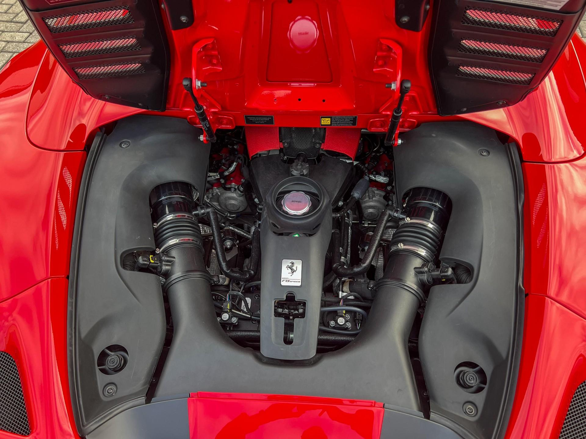
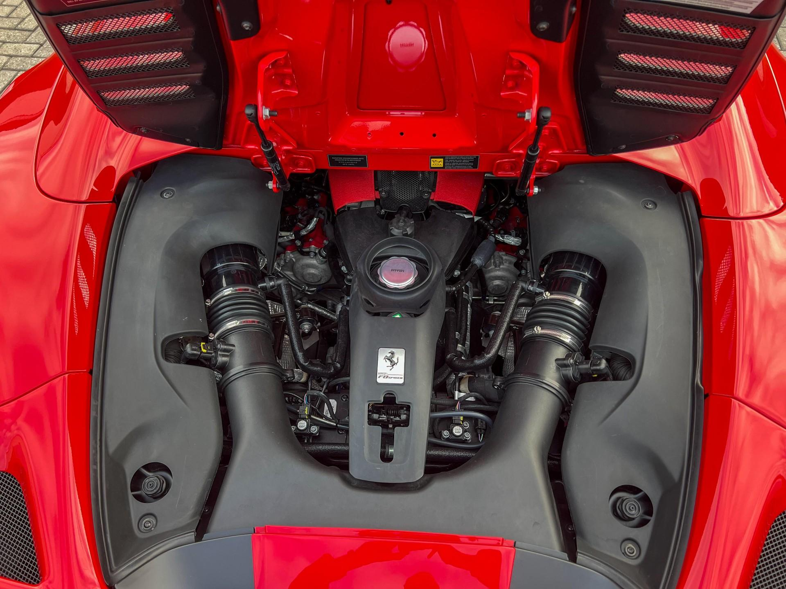

Ferrari F8 Tributo


 

Ficha técnica completa
- Motor: 3.9 L V8 Biturbo
- Potência: 720 cv
- 0–100 km/h: ~2.9 s
- Tração: Traseira
Dados principais
3.9 V8 | 720 cv | R$ 3.000.000
Descrição
F8 Tributo é um berlinetta com motor central-traseiro, projetado para entregar performance pura e resposta imediata do acelerador.